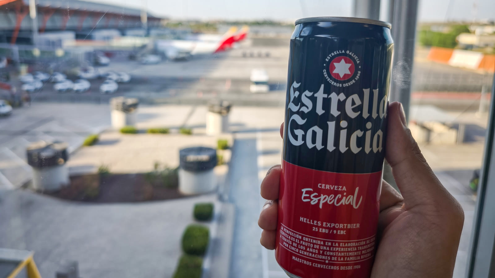
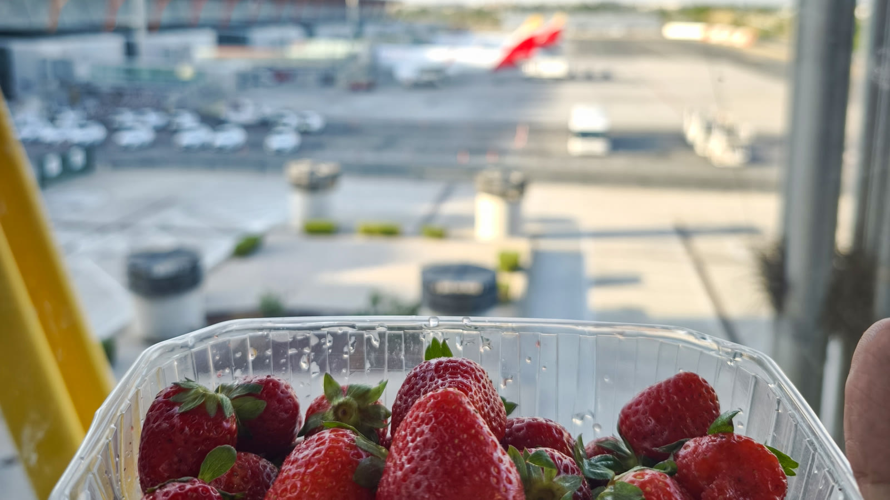
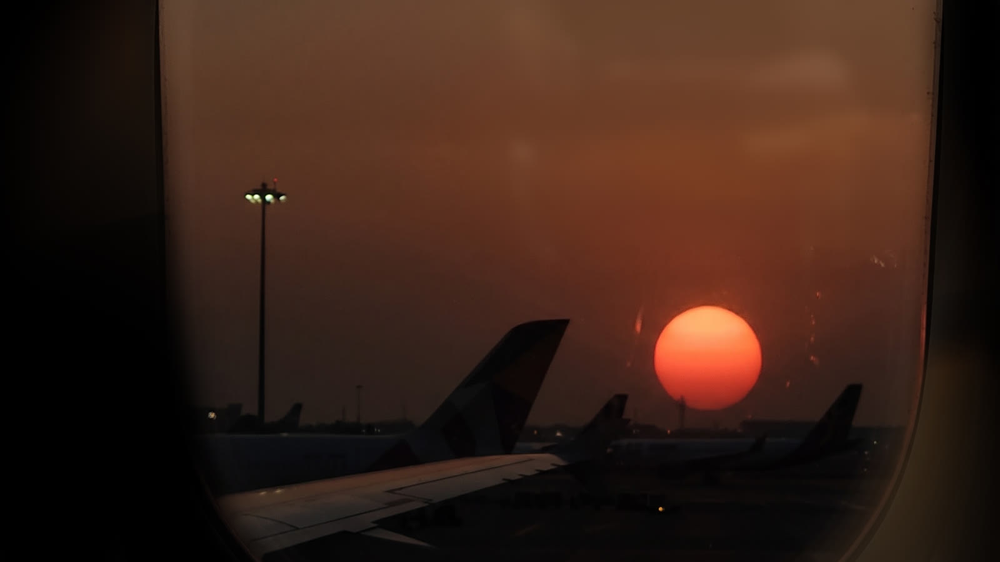
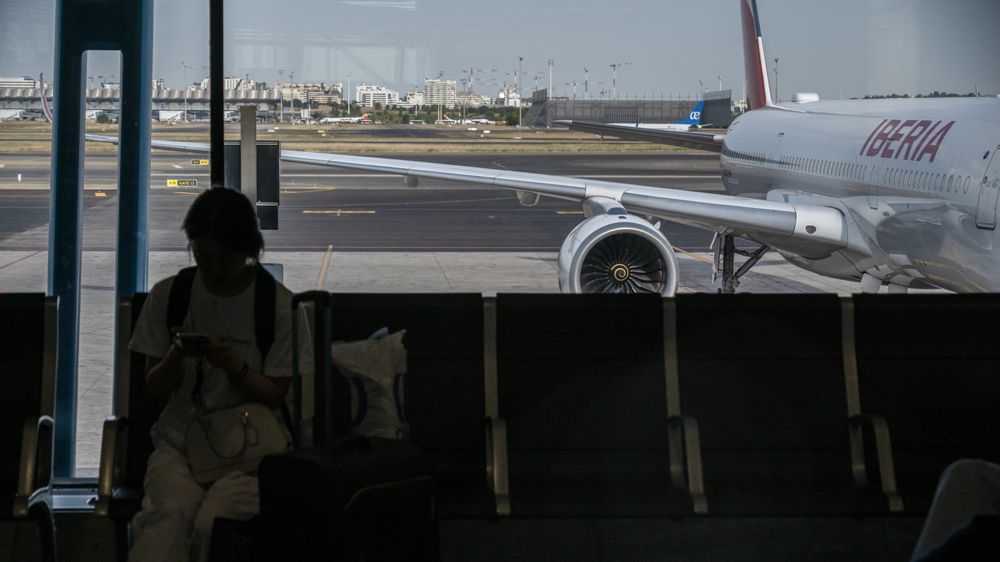
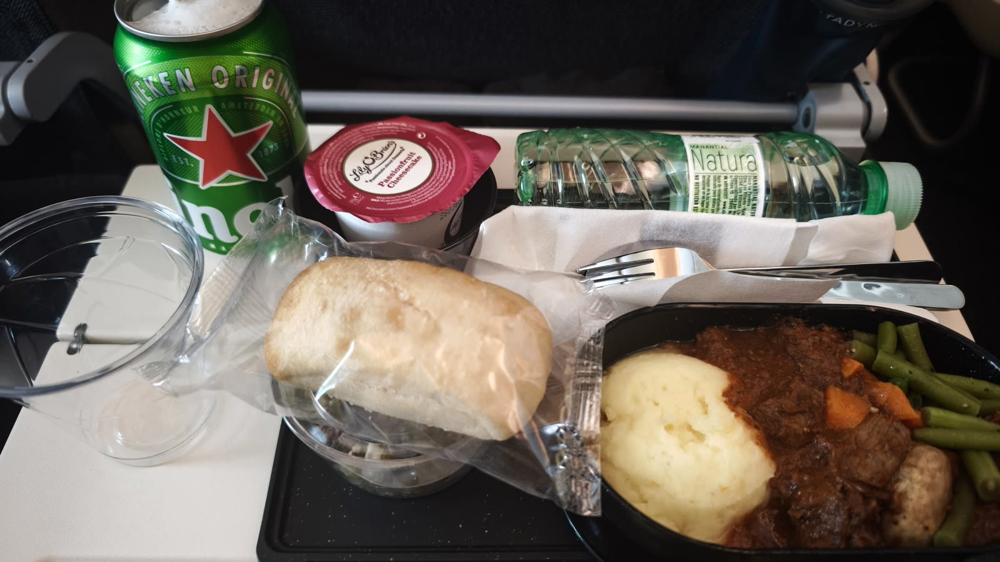
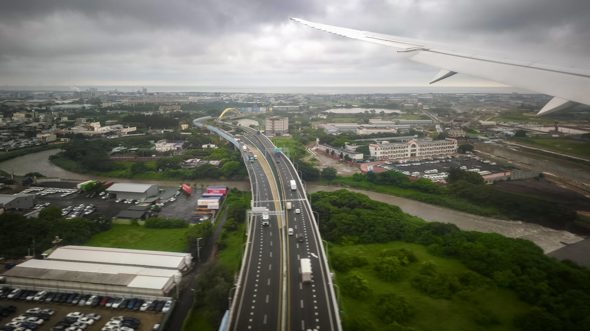

Day 37｜回家、紅布條、Buen Camino
2026 年 6 月 26 日 · Madrid → Taiwan · 回家
前往機場的路上，回想從出發前的忐忑與徬徨——不確定一個平常不爬山、不跑步的自己，到底能不能走完；到現在，坐在回程的飛機上。



這一千公里的朝聖之路，教會我最重要的一件事，就是不要跟別人比快。敞開心胸，接受路上的一切，找到屬於自己的舒適節奏。不要受傷，慢慢走，總會走完的。

而這一路上的答案，有時候是水泡、熱浪、迷路，但更多時候，是那些意想不到的相遇：晚禱時撫慰人心的吉他彈唱、七十歲依然熱血的大姊，還有在庇護所裡，和一群原本陌生的人一起煮飯、跳舞，像家人一樣分享生活。意外遇上 León 的古代軍隊遊行、中世紀比武，最後也終於走進了聖地牙哥大教堂，親眼看見盪香爐。

老爸環遊世界的夢想還沒完成，就先離開了。所以這一次，我帶著他的那份念想，走向世界盡頭。而現在，我做到了。爸，世界很大，我們又一起多看了一點。

飛機一落地，從馬德里的街頭，瞬間切換回熟悉的台灣。當我走出大門，迎面而來的是舉著浮誇紅布條、笑得比我還誇張的好朋友時，那一瞬間我突然懂了：真正的終點，就是這份熟悉的味道，和這群熟悉的人。回家的感覺，真好。

用一頓久違的台式辦桌為這趟冒險洗塵，大口吃下久違的台灣味——這絕對是世界上最奢侈的幸福。朝聖之路結束了，但對世界的探索，永遠不會停止。
Buen Camino！布魯克，平安歸來。
📚 朝聖者小百科：Buen Camino
Buen Camino是朝聖路上所有人互相打招呼的話，意思是「祝你有條好的道路」——出發時是祝福，路上是打氣，終點是恭喜。走完之後才懂：它不只是一句問候，而是一種把陌生人變成家人的魔法。把這句話帶回家，送給每一個準備出發的人。
👋 讀完 37 篇日誌的你，也值得一句：Buen Camino！
| 杜拜香水 | 112 AED |
| 杜拜香水×2 | 99 AED |
| 合計 | 211 AED ≈ €51.3 |
🎬 對應 Vlog EP9｜完結篇：爸，我做到了！徒步1000公里抵達終點Muxía 0KM、馬德里巡禮